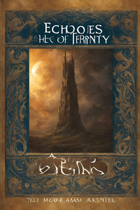
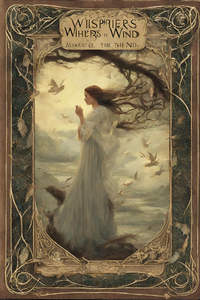
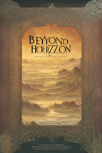
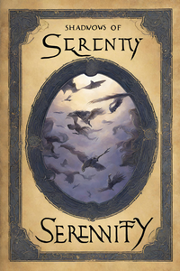
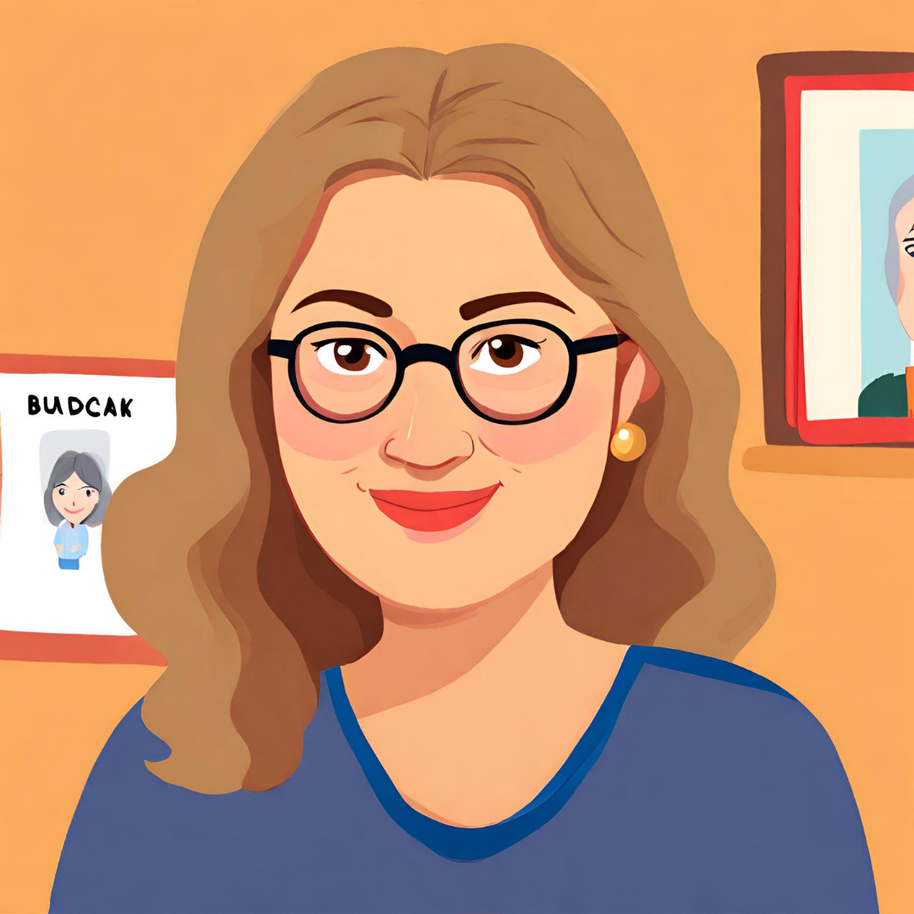

CodeLit Books by Beyda Bucak
Home
About
Contact

Echoes of Eternity
Price : $15
Buy Now

Whispers in the Wind
Price: $20
Buy Now

Beyond the Horizon
Price: $15
Buy Now

Shadows of Serenity
Price: $19,99
Buy Now
